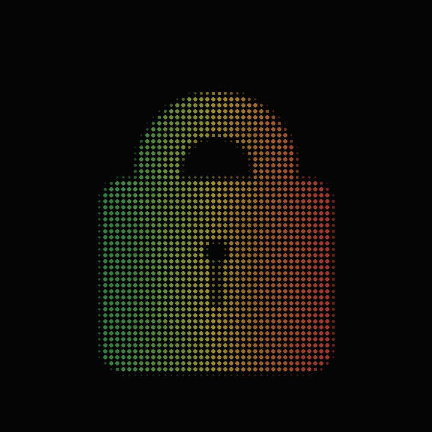
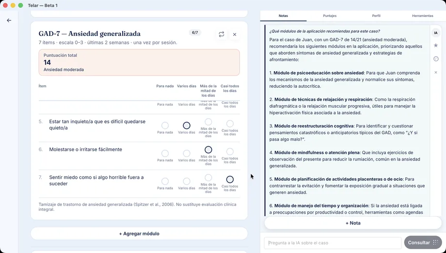

En sesión
GAD-7 que puntúa. TCC. Narrativa. Estimulación bilateral. Muse 2 en la sala. No un chat que redacta la nota después.
Telar es una app de escritorio para psicólogos: escalas que puntúan, módulos en la hora, neurofeedback y una IA que viene apagada. Open source. Ley 19.628.
3 pacientes gratis · Sin tarjeta · 13 escalas · Cifrado local · WhatsApp en Demo y Pro
GAD-7 que puntúa. TCC. Narrativa. Estimulación bilateral. Muse 2 en la sala. No un chat que redacta la nota después.
Ficha cifrada, programa por sesiones, PDF en Pro. La IA, si la enciendes, lee lo que ya escribiste.
Por defecto no hay copiloto. Al preguntar, Telar recomienda Ollama en este equipo. Tú aplicas el plan.
Sin servidor de fichas. Respaldo opcional a tu iCloud, Dropbox o Drive, ya cifrado. AGPL.
Donde vive el caso
Psypilot guarda la ficha en Azure (Países Bajos). ChatGPT, en la de OpenAI. Telar cifra en tu disco. El respaldo Pro es opcional y va a tu iCloud, Dropbox o Drive, ya cifrado: ni Telar ni la nube pueden leerlo.

Cómo funciona
Un flujo de consulta real, no un chat que redacta la nota después.
Motivo, registro inicial, objetivos. Una vez. No otra vez en la sesión 2.
GAD-7 que puntúa, TCC, narrativa, estimulación bilateral, Muse 2.
Si la activaste: programa, email, resumen. No inventa el caso.
«¿Aplico este programa?» Sin ese clic, la ficha no cambia.
Puntuación 7. Corte e interpretación en la misma pantalla. La curva se actualiza sola.
Módulos de esta sesión: felt sense · plan de seguridad (ya en sesión 1, no se vuelve a meter).
IA: apagada. Al preguntar, Telar recomienda Ollama en este equipo.

Comparativa
Mismo precio de entrada que Psypilot (~€19 / $19.990). Distinto lugar donde vive el paciente.
| ChatGPT | Psypilot | Telar | |
|---|---|---|---|
| Dónde vive el caso | Sus servidores | Azure, Países Bajos | Tu disco, cifrado |
| Sin internet | No funciona | No funciona | Sí (salvo API de IA o ping de plan) |
| Código | Cerrado | Cerrado | AGPL, auditable |
| Transcripción de sesión | Si pegas el audio, el audio sale | Sí, en su nube, con cupo | No. A propósito: el audio no viaja |
| Anonimización de PII | Tú recortas nombres a mano | Sustituye [empresa], [colega] en la transcripción | No aplica: no subimos el relato a transcribir |
| Notas e informes IA | Si le dictas el caso | Borrador desde el audio | Programa y resumen desde la ficha que tú llenaste |
| Escalas con scoring | No | GAD-7 y PHQ-9 en Pro | 13, con curva |
| Módulos en la hora | No | Ficha tipo HC + chat | 45 (TCC, narrativa, NF…) |
| Neurofeedback | No | No | Muse 2 + curso en Pro |
| IA | El producto. Siempre on | Copiloto permanente en la nube | Off. Local (Qwen, Llama, Mistral) o tu API |
| Equipos / clínicas | No | Teams, roles, SSO | Misma medición, ficha en cada PC. Sin servidor central |
| Humano en el loop | Si te acuerdas | Validar documento | Aplicar / ahora no |
| Precio | Plus ~USD 20 | 0 / 3 casos · 19€ Pro | 0 / 3 pacientes · $19.990 Pro |
| Instalación | Browser | Browser | .dmg / .exe. Ese es el impuesto |
PII = datos que identifican a una persona (nombre, empresa, teléfono). Psypilot los tapa en la transcripción porque el audio ya está en su servidor. Telar no transcribe en la nube: no hay qué tapar ahí. Si algún día hay transcripción, sería en el equipo (Whisper local), no «para empatarlos».
Lo que no vamos a clonar
Para algunos sí: ahorra la nota. El costo es subir el audio a un encargado. Eso choca con el secreto profesional y con el MIC (el caso no debería vivir en un LLM ajeno). Telar no transcribe en la nube. Si entra, será Whisper en el computador — no un copiloto que ya escuchó la hora.
Psypilot Teams es un EHR multi-usuario en su nube: roles, SSO, derivación. Telar puede alinear escalas y programas entre colegas; la ficha sigue en cada PC. Eso no es «perder»: es no centralizar pacientes de una clínica en un vendor. El camino está en instituciones.
Ética de IA en consulta
El MIC de la Ps. Marcela Barría Cárdenas (preprint Zenodo, 2026) propone tres pilares. Telar no «implementa el MIC»; se deja auditar contra él.
El juicio sigue siendo tuyo. La IA no aplica un programa sola. No diagnostica.
La ficha no es de un encargado en Países Bajos. Local, o tu nube privada ya cifrada.
La hora no se reemplaza por un chat. Los módulos de narrativa y TCC se trabajan con el paciente en la sala.
La pregunta no es si la IA entra a la consulta. Es si el caso se queda en tu equipo o se va a un servidor con un copiloto siempre encendido.
Posición de producto Telar · agosto 2026
Ps. Marcela Barría Cárdenas — asesora en ética de IA en consulta, no parte del equipo de desarrollo. Creadora del MIC. Formación en IA para psicólogos; psicología y 1,5 años de ingeniería civil en informática.
iaysaludmental.com · preprint: 10.5281/zenodo.19528297
Neurofeedback
Cursos de entrada gratuitos en Copiapó y Viña del Mar, para que la gente abra Telar con un caso real — no solo un PDF. Cupos y fechas: WhatsApp.
El impuesto de ser local
Ese es el pain point. En Windows, SmartScreen frena el .exe porque aún no hay firma Authenticode. En Mac, Gatekeeper. Si te bloquea, WhatsApp: te guiamos. Firmar Windows es la urgencia.

Preguntas frecuentes
El dolor es instalar. Estamos firmando Windows. En Mac, un .zip. Si Gatekeeper te frena, escríbenos.